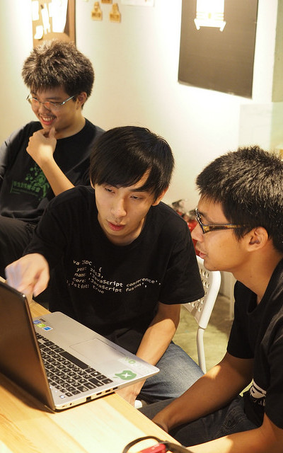
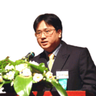
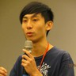

主題介紹
The True Hackers今年的活動主題「The True Hackers」，將聚焦於真正的駭客精神。駭客發源於80年代的 MIT 人工智慧實驗室，其對抗壟斷、反抗權威、推崇自由開放、重視技術實作的精神至今 在世界發揚光大。初代駭客們更相信資訊不應被壟斷，致力於將電腦普及， 他們相信電腦可以改善人的生活，電腦不應被鎖在企業與政府的層層權威與官僚當中。 為了避免資訊科技落入政府與大企業的壟斷之中，駭客們提倡分散式與開放的系統， 他們更預見資訊科技的全面普及，雖然可以為人類帶來眾多便利，但若資訊科技的力量 被政府和企業壟斷掌控，便會形成一個各方面都被監控的社會。他們的洞見在史諾登揭露 NSA 全球全面性無差別的竊聽計劃之後被證明不是危言聳聽。 現今駭客們更加大聲地疾呼隱私權的保障，以捍衛最基本的人權—自由。除此之外， 他們的理念也影響了諸如自由軟體、開放政府、資訊安全與自造者運動等多種領域。 這次的年會除了延續之前的理念推廣外，也希望讓參與的學生與民眾了解駭客精神的 真諦思想，與駭客精神在各種不同領域的展現。 |
 |
Keynote
Kaede - We hack worlds今年的第一場 Keynote 邀請到 PTT 創站站長暨水球發明人 - Kaede，來分享他多年來 參與網路通訊等改變台灣與世界的各種事件，其背後的來龍去脈與奇聞軼事，講者也曾經 和自由軟體之父 RMS 近距離接觸，除了瞭解 RMS 自由軟體運動背後的駭客精神， 更對於駭客精神有親身體悟。「軟體就是媒體，程式就是法律」， How do we hack the world? 你絕對不能錯過。 |
|  |
BS.Liang - Evolution of The Internet 互聯網的演進網路，這個在我們生活中最不可或缺的發明，它帶動了資訊科技的蓬勃發展，也連結了 全球各地的人們。身為學生的我們，如果沒有宿網會是如何呢？ 你知道全臺灣第一個宿網—交大宿網，其實是學生社團和老師共同推動建設的嗎？ 我們邀請到學生時代創立交大 CCCA （校園網路策進會）、對台灣早期學術網路 貢獻良多的梁伯嵩先生來分享建立全臺灣第一個宿網，並推廣 Internet 和電腦的經過。 |
其他議程
Maeglin - Aerodox - a mobile-based mouse如果是你，你想要怎麼操控筆電呢？用滑鼠、觸控板不夠看了，手機也可以！ 雖然市面上早已有了類似的 app 可以使用，但多半功能不齊全。經由講者與 他的夥伴研究改良，突破了一些障礙如飄移現象、傳輸即時性等問題。 下午兩點半在國際會議廳，一起來聽聽他們在過程之中學到的事物吧！ |

|
海豹 - Google Code-In 開源，從小開始開源開源，到底該怎麼開始呢？ 年僅十五歲的講者在去年夏天經由 SITCON 夏令營認識了 Open Source 之後， 從此開始他的開源之路，也完成了許多作品。 Google Code-In 是 Google 為了鼓勵全世界 13~17 歲學生參與開放原始碼所辦的比賽， 透過與各大開源社群出題，給學生許多實務性的任務（包括程式、文件撰寫、 資料研究…等）去完成，最終贏家還會得到一次去美國加州山景城 Google 總部的來回旅程。快來一睹風采吧！ |
Pellaeon - 柏林的駭客們：程式、啤酒與自由你相信這個世界上，真的有一個城市甚至一個國家，處處都在 hack 嗎？ 駭客精神的兩大核心：謹慎懷疑、務實性格，從飛機、衛星通訊、到作業系統樣樣都駭， 這情景在德國處處可見。本議程將介紹在柏林參加黑客松交流的心得、聚會中的見聞、 柏林的氛圍、資訊圈和社群的狀況，一起跟著講者開瓶啤酒，一窺德國人的駭客精神吧！ |
人物專訪
|  |
總召 MouseSITCON 一轉眼就踏入了第三年，今年年會我們仍秉持著不收費的原則， 也因投稿太過熱烈加開了第四軌議程，還有其他新嘗試等著大家來到現場體驗囉！ |
副召 RSChiang針對今年的年會，我想一直以來我們對 SITCON 的期許，都是能夠在學生搭建的舞台上、 展現屬於學生的耀眼光彩； 而第三屆的年會便是我們在提升年會質與量上的首度嘗試。 我們常常在思考該如何跨出社群界、觸及籌備人員交友圈外的更多學生們，而透過各式的 定期聚與工作坊，我們正在朝遍地開花而努力著。 今年的年會不會是一年煙火秀的結束，而是引領學生自作風氣的開始； 這是我所相信的 SITCON。 |
贊助單位

|
MEDIATEK 聯發科技股份有限公司聯發科技是全球前三大 IC 設計公司，佈局前瞻技術，致力提升及豐富大眾生活 全球 27 個 據點，體驗跨國合作的最佳平台，提供超過 600 個軟體及暑期/在學實習機會， 歡迎你加入一起創造無限可能！ |
認識聯發 |